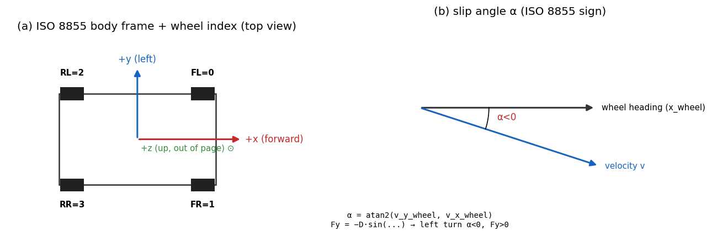

01. Frames and Sign Conventions¶
Learning objectives¶
이 chapter 를 마치면 다음을 할 수 있다.
- ISO 8855 RH 와 SAE J670 의 좌표계 차이를 식의 부호 변화로 즉시 식별한다.
- 4 가지 frame (world / body / wheel / contact) 사이의 변환을 quaternion 으로 정확히 정의한다.
- slip angle
alpha와 slip ratiokappa의 부호 직관을 좌선회 / 가속 / 제동 각각의 case 로 설명한다. - yaw integration 의 정확한 형식 (quaternion ODE) 과 simplification (planar yaw) 의 적용 범위를 판별한다.
Prerequisites¶
- 선형대수 — 회전 행렬, 정규 직교 기저.
- Quaternion 기초 — Hamilton product, conjugate.
- 외부 reference — Pacejka §1.3 (ISO vs SAE), Genta §2.2 (좌표계 정의).
1.1 동기 — 왜 좌표계가 별도 chapter 인가¶
차량 동역학에서 가장 흔한 버그는 부호 실수다. 같은 단어가 책마다 다른 부호를 의미한다.
| 책 | y 축 | α 부호 (좌선회) | Fy 부호 (좌선회) | yaw 양의 방향 |
|---|---|---|---|---|
| ISO 8855 RH (Genta, EU) | leftward | α > 0 | Fy < 0 | CCW (위에서 본) |
| SAE J670 (Rajamani, US) | rightward | α < 0 | Fy < 0 | CW (위에서 본) |
본 시리즈는 ISO 8855 RH 단일 채택. 모든 식이 이 가정 위에서 유도된다. 다른
책의 식을 옮길 때 — 예: Rajamani 의 δ − atan(v_y / v_x) — 의 부호 변환을
명시적으로 추적해야 한다. 그대로 옮기면 yaw rate / lateral force 의 부호가 반대로
나온다.
1.2 가정¶
본 chapter 의 모든 식은 다음 가정 위에서 유도된다.
| 가정 | 의미 | 깨지는 case |
|---|---|---|
| Flat ground | 지구 곡률 무시 | 장거리 GNSS / banked turn |
| Contact normal = ground normal | suspension travel 시에도 normal 불변 | rough terrain (chapter 14) |
| Small roll / pitch | yaw 적분에 planar simplification 적용 가능 | aggressive maneuver (chapter 06) |
| 차량은 rigid + sprung body 단일 | sprung body 의 yaw 가 vehicle yaw | flexible chassis (out of scope) |
가정이 깨지는 chapter 별 연결은 §1.10 에서 정리한다.
1.3 네 가지 frame¶
Inertial (world) frame W¶
- ENU (East-North-Up) right-handed.
- 원점: 시뮬레이션 시작 시점의 차량 CG (또는 임의 fix).
- 차량 trajectory
(x_w, y_w, z_w)가 여기서 측정된다.
Body frame B¶
- 원점: sprung body 의 CG.
- 축:
x_Bforward,y_Bleftward,z_Bup (ISO 8855 RH). - vehicle 의 모든 속도 / 가속도 / 힘은 별도 표기 없는 한 body frame.
Wheel frame W_i¶
- 원점:
i번째 wheel 의 contact point (또는 wheel center, 문맥에 따라). - 축:
x_W는 wheel 의 forward 방향 (steered wheel 의 경우 body x 에서δ만큼 회전),y_W는 wheel 의 left,z_W는 contact normal.
Contact frame C_i¶
- Wheel frame 과 동일하나
z가 ground normal 과 align 됨. - Flat ground 가정 하에서 contact frame = wheel frame.
- 비평탄 지형에서는 두 frame 이 분리 (chapter 14).

1.4 Quaternion 으로 본 회전¶
Body → world 변환은 unit quaternion 으로 표현한다.
여기서 q 는 body frame 의 orientation. q = Identity 일 때 body frame 이
world frame 과 일치.
ZYX Tait-Bryan Euler ↔ quaternion¶
본 시리즈는 ZYX intrinsic Tait-Bryan (no axis repetition) 을 채택한다.
순서가 roll → pitch → yaw 의 적용 순서이며, 회전 행렬은 그 역순으로 쌓인다.
다른 책의 ZYX extrinsic / XYZ intrinsic 등과 결과가 다르므로, 외부 식을 옮길
때는 순서를 명시적으로 추적해야 한다.
Yaw 만 필요할 때 — atan2 추출¶
roll / pitch 가 작은 영역에서는 yaw 만 필요한 경우가 흔하다. 일반 식:
roll / pitch = 0 의 special case 에서는 psi = 2 · atan2(q_z, q_w) 로 간략화
가능.
1.5 ISO 8855 의 slip 정의¶
Slip angle alpha¶
Wheel center 의 velocity 를 wheel frame 으로 옮긴 후:
Front wheel (steered angle δ):
여기서 wheel position 의 lever arm 적용: v_{y,body} = v_{y,cg} + a · r.
Rear wheel (un-steered, wheel frame = body frame):
부호 직관 — 좌선회 case¶
좌선회 (r > 0, δ > 0). Rear axle 을 보면 v_{y,wheel} = v_y − b·r. Steady-state
에서 v_y 가 약간 음수, b · r 가 양수 → 합쳐서 음수. v_x 양수 →
α_r = atan2(−, +) < 0.
따라서 ISO 8855 RH 에서 좌선회 시 α < 0.
다음으로 Pacejka 의 Fy = -D · sin(...) 의 leading minus 부호를 보면:
α < 0 → sin(...) < 0 → Fy > 0. 즉 cornering force 가 차량을 안쪽으로
(+y = leftward = inside of left turn) 잡아준다.
SAE J670 의 책에서는 같은 좌선회의 α 부호가 반대로 나오므로 (y-axis 방향 차이), 다른 reference 의 식을 옮길 때 이 부호 변환을 항상 추적한다.
Slip ratio kappa¶
omega— wheel angular velocity [rad/s], rolling forward 시 양.R— kinematic (loaded) wheel radius.R · omega— slip 없을 때의 진행 속도.ε— 정지 근처에서 발산 방지하는 floor.
부호 직관¶
| case | 식 부호 | κ | Fx |
|---|---|---|---|
| 가속 (drive) | R·ω > v_x | κ > 0 | Fx > 0 |
| 제동 (brake) | R·ω < v_x | κ < 0 | Fx < 0 |
| 정지 | ω = v_x = 0 | κ = 0 | Fx = 0 |
1.6 World 변환 — yaw integration¶
차량의 world position 적분은 body velocity 를 world frame 으로 회전시켜 수행한다.
Planar simplification (roll / pitch ≈ 0)¶
이 형식은 Ld1 / Ld2 모델에서 충분하다. roll / pitch 가 작은 영역에서는 정확 quaternion ODE 와 거의 일치한다.
Quaternion ODE (정확 형식)¶
p, q, r 는 body frame 의 angular velocity 성분. roll / pitch 가 활성화된
Ld3 (chapter 06) 부터는 이 정확 형식이 필요하다.
Yaw 적분의 흔한 실수¶
planar 형식에서 dot ψ = r 이 핵심이다. vx 를 yaw 적분에 사용하는 실수
(예: dot ψ = vx / R 같은 잘못된 식) 가 자주 발생한다. 차량이 정지 (vx = 0)
인데 외란으로 yaw 가 변하는 case 를 표현 못 한다.
1.7 검증 전략¶
본 chapter 의 식과 부호 약속은 다음과 같이 자동 검증한다.
| 검증 | 식 / 케이스 |
|---|---|
| Quaternion identity | quat_from_euler({0,0,0}) ≈ Identity |
| Yaw round-trip | yaw_from_quat(quat_from_euler({0,0,π/2})) ≈ π/2 |
| ISO 8855 좌선회 부호 | 해석적 steady-state 의 r, α_r, Fy 부호가 §1.5 의 표와 일치 |
| Wheel frame 변환 | 동일한 wheel velocity 에 대해 body / wheel 두 frame 의 slip 식이 같은 α 반환 |
| 기준 비교 | Genta §3.1 의 understeer gradient 식과 부호 일치 |
세부 unit test 매핑은 §1.11 의 implementation note 참조.
1.8 한계¶
본 chapter 의 약속과 식이 적용 안 되는 case.
| 한계 | 영향 | 다루는 chapter |
|---|---|---|
| Banked road / 경사로 | flat ground 가정 위반 | chapter 14 (contact frame 분리) |
| Roll / pitch 가 큰 maneuver | planar yaw 적분의 오차 누적 | chapter 06 (quat ODE) |
| 지구 곡률 | world ENU 의 flat 가정 위반 | 본 시리즈 out of scope |
| Suspension travel 의 contact 변화 | wheel frame 의 z 가 변화 | chapter 14 (kinematic table) |
1.9 다음 chapter 와의 연결¶
좌표계와 부호가 정해졌으므로, chapter 02 는 이 frame 위에서의 강체 운동방정식 (Newton-Euler) 을 정리한다. body frame 에서 EoM 을 쓰면 관성 행렬이 시간 불변 이라는 핵심 이점을 활용할 수 있다. 이 토대 위에서 Pacejka (chapter 03), Ld1 (chapter 04), Ld2 (chapter 05), Ld3 (chapter 06) 가 같은 base 를 공유한다.
1.10 참고문헌¶
- Genta, G. Motor Vehicle Dynamics, World Scientific, 2014. §2.2 좌표계 정의, §3.1 slip 정의.
- Pacejka, H.B. Tire and Vehicle Dynamics, 3rd ed., 2012. §1.3 ISO 8855 vs SAE.
- Rajamani, R. Vehicle Dynamics and Control, 2nd ed., Springer, 2012. SAE convention — 부호 변환 후 인용.
- Sola, J. Quaternion kinematics for the error-state Kalman filter, arXiv:1711.02508, 2017. Tait-Bryan vs proper Euler 의 명확한 정리.
1.11 Self-check¶
1. ISO 8855 RH 에서 좌선회 시 yaw rate r 의 부호는?
`r > 0`. ENU 의 z 가 up 이고 ISO 의 z 도 up 이라, 위에서 본 CCW 가 양.
2. 같은 좌선회에서 ISO 8855 RH 와 SAE J670 의 alpha 부호는 각각?
ISO 8855 RH 에서 `α < 0`, SAE J670 (Rajamani) 에서 `α > 0`. y 축 방향이 반대라
같은 물리 운동의 alpha 부호가 뒤집힌다. Fy 는 두 convention 에서 동일하게 음
(restoring) — sign 두 번 뒤집혀 보존.
3. ε floor 를 빠뜨리면 어떤 case 에서 kappa 가 발산하는가?
차량 정지 직전 (`v_{x,wheel} → 0`) + wheel 이 약간이라도 회전 중 (`omega ≠ 0`)
인 case. 분모가 0 으로 가서 `κ → ±∞`. ε ≈ 0.5 m/s 로 clamping.
4. quat_from_euler({roll, pitch, yaw}) 의 인자 순서가 (x, y, z) 회전 순서가 아니라 (φ, θ, ψ) 인 이유는?
ZYX intrinsic Tait-Bryan 의 회전 행렬은 `R_z · R_y · R_x` 순으로 쌓이지만,
*적용 순서* 는 `roll → pitch → yaw` (intrinsic rotation 의 정의에 따라). 함수의
parameter 가 *적용 순서* 를 따르므로 `(roll, pitch, yaw) = (φ, θ, ψ)`. 외부
reference 에서 *회전 행렬 곱 순서* 와 혼동하지 않도록 주의.
5. yaw 적분에 vx 가 아니라 r 을 사용하는 이유는?
`vx = 0` 인 정지 상태에서도 외란 (예: rear tire impulse) 으로 yaw 가 변할 수
있다. yaw rate 는 body angular velocity 성분이고, 이는 forward speed 와 독립.
`dot ψ = vx / R` 같은 잘못된 식은 정지 차량의 yaw 변화를 표현 못 한다.
1.12 VDSim 구현 노트¶
본 chapter 의 약속을 VDSim 코드가 따르는 방식. 본문 의존 없이 skim 가능.
[VDSim impl] § 1.3 — Wheel index 상수
core/include/vdsim/types.hpp:15-19:constexpr int WHEEL_FL = 0; // front left (+x forward, +y leftward) constexpr int WHEEL_FR = 1; constexpr int WHEEL_RL = 2; constexpr int WHEEL_RR = 3; constexpr int NUM_WHEELS = 4;[VDSim impl] § 1.4 — Quaternion 변환 코드
Eigen
Quaterniond사용.core/src/coordinate.cpp의yaw_from_quat,quat_from_euler두 함수:inline double yaw_from_quat(const Quat& q) { return std::atan2(2.0 * (q.w() * q.z() + q.x() * q.y()), 1.0 - 2.0 * (q.y() * q.y() + q.z() * q.z())); }Quat 의
(w, x, y, z)순서는 Eigen 의w(), x(), y(), z()accessor 로 접근. 다른 lib (예: ROS tf2) 의(x, y, z, w)와 순서 다른 점에 주의.[VDSim impl] § 1.5 — Slip 계산 코드
core/src/bicycle_dynamics.cpp:146-152:const double alpha_f = std::atan2(v_fy_wheel, v_fx_wheel); const double alpha_r = std::atan2(v_ry_body, v_rx_body); const double kappa_f = (R * of - v_fx_wheel) / denom_f; const double kappa_r = (R * or_ - v_rx_body) / denom_r;
denom_*는std::max(std::abs(v_*), 0.5)로 ε floor 강제.[VDSim impl] § 1.6 — ABI 상의 State 약속
core/include/vdsim/state.hpp의 약속:
필드 frame 단위 State::positionworld ENU m State::orientationbody → world unit Quat State::velocitybody m/s (vx, vy, vz) State::angular_velocitybody rad/s (p, q, r) tire_forces_body()body N wheel_slip_angle()wheel rad 이 약속은 모든 모델 사다리 (Ld1-Ld3 + 계획 중인 Ld4-Ld5) 에서 동일. dynamics 를 갈아끼워 다른 fidelity 로 가도 외부 코드 (controller, CARLA plugin) 가 다시 짜지 않는다.
[VDSim impl] § 1.7 — 검증 unit test
검증 test 파일 Quaternion identity 와 round-trip tests/unit/test_coordinate.cpp헤더 컴파일 / Vec3::UnitZ default tests/unit/test_headers_compile.cppISO 8855 좌선회 부호 통과 tests/integration/test_bicycle_steady_state.cpp의LeftTurnYawRateMatchesAnalytical[VDSim impl] § 1.x — 자주 실수하는 코드 패턴
실수 증상 VDSim 의 대응 Rajamani 의 δ − atan(...)사용yaw rate 부호 반대 atan2(v_y_wheel, v_x_wheel)Wheel 위치 lever arm 누락 rear axle alpha 부호 틀림 vy − b·r명시Yaw 적분에 vx사용정지 차량의 yaw 가 표류 dot ψ = rQuat 의 (w, x, y, z)순서 혼동rotation 결과 깨짐 Eigen w()/x()/y()/z()accessorε floor 누락 저속에서 κ 발산 std::max(|vx|, 0.5)Roll/pitch 가 quat 에 안 들어감 Ld3 시각화에서 차체 안 기울어짐 quat_from_euler({roll, pitch, yaw})